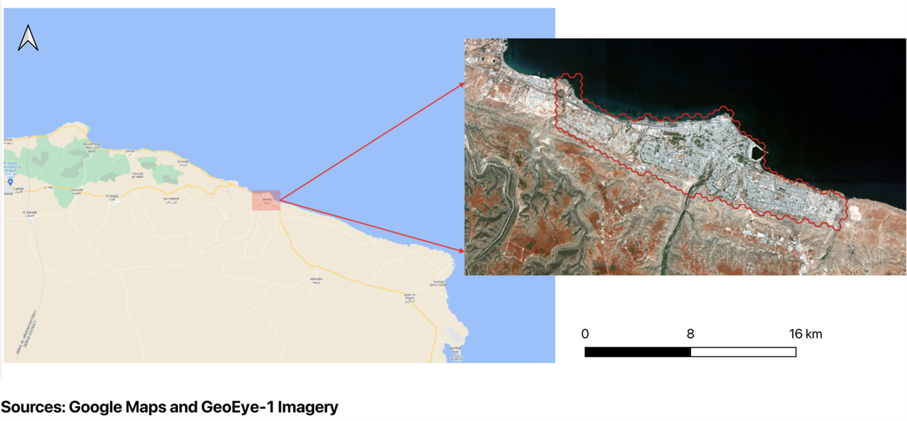
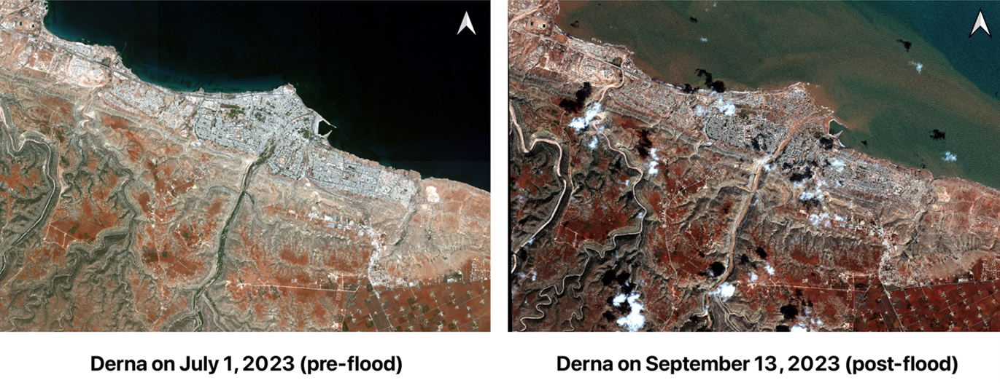
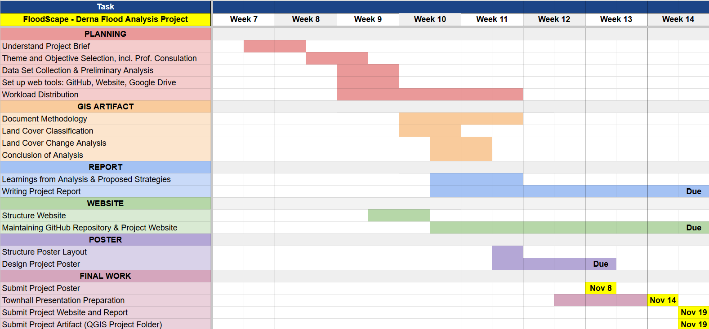

About
1.0 Setting the Stage
Libya is a North African nation that has struggled with a series of natural disasters, primarily floods. Recently, the world witnessed Derna, a city situated along the eastern coast of Libya, endure a series of devastating floods causing detrimental humanitarian and infrastructural destruction, exacerbated by the nation’s political-military instability and history of neglect. However, while some may attribute the calamities solely to natural disasters, the devastation is mainly due to neglectful urban planning, inadequate public infrastructure maintenance, and years of political discourse. These incidents have only propelled Libya towards an escalating humanitarian crisis.

1.1 Derna: A Catastrophic Storm of Natural Disaster and Man-Made Failures
Derna, a city renowned as Libya’s cultural capital, has been the subject of with recurrent flood events over the past century, each varying in severity. Located along the eastern coast, this city of approximately 90,000 residents bears the scars of previous floods which occurred in 1941, 1959, and 1968 (Pietromarchi, 2023).
The Wadi Derna River, which courses from the south of the city into the Mediterranean Sea, bisects Derna. Control over this river was entrusted to two dams: the Upper Wadi Derna Dam, located 13 kilometers outside the city, with a capacity of 1.5 million cubic meters, and the Lower Wadi Derna Dam, situated a few hundred meters from the city’s outskirts, with a capacity of 22.5 million cubic meters. In an interview, Derna’s Deputy Mayor Ahmed Madroud revealed that these critical structures, constructed by a Yugoslav company in the mid-1970s, had deteriorated as a result of no maintenance since 2002 (Loveluck, 2023).
Tragically, the lack of public investment in Derna’s dams proved to be a catastrophic decision. On September 10, 2023, Mediterranean Storm Daniel unleashed intense rainfall, causing the dams to succumb and release over 30 million cubic meters of water onto the city. This amount, equivalent to the volume of 12,000 Olympic-sized swimming pools, overwhelmed Derna’s drainage capacity. Even more devastating is the news that One day before the storm hit Libya, the mayor urged that areas surrounding the dam should be evacuated in a Press Conference.
However an emergency committee formed by the eastern government’s Interior Ministry ordered curfews instead.
The ensuing flash floods inundated residential areas, disrupted road networks, and claimed swathes of agricultural land. The fallout from this disaster has been extensive, and as of October 9, 2023, the death toll from the floods is estimated to be over 11,300, with an additional 10,000 people still missing (Smith, 2023). In addition, to the loss of life, thousands of residents have been displaced, detrimental damage has been done to homes, and the city has been left without service (Loveluck, 2023).

2.0 Scope of Work
This project is focused on Land Cover Land Use (LULC) change detection using remote sensing techniques. We will be utilising publicly available satellite data such as Sentinel-2 data as well as literature reviews for the analysis of the project. The scope of the project will cover the process of area selection and data collection, data preparation, generating training and testing data, performing Multi-spectral Classification, and finally performing land cover change detection and analyzing the results. For the Multi-spectral Classification of satellite imagery, Supervised Classification technique using the Semi-automatic classification Plugin (SCP) will be used.
2.1 Datasets
For every GIS project, data preparation is a vital step comprising collecting, organizing, and processing geospatial datasets from various sources. The quality of the dataset and the quality of the data wrangling process significantly impact the results of the project. In this Section, we will be discussing the dataset sources and the steps involved in acquiring the data.
2.1.1 Landsat 8-9 Datasets:
Landsat 8 and Landsat 9 are NASA-operated satellites providing Earth observation data through two instruments: Operational Land Imager (OLI) and the Thermal Infrared Sensor (TIRS). This dataset was obtained from United States Geological Survey (USGS) EarthExplorer, an open-source platform providing access to a repository of satellite imagery spanning across numerous years and periods. The Landsat 8 datasets comprises 11 bands, each capturing different information about the Earth’s surface, such as visible light, infrared, and thermal data which are vital for tasks such as land cover classification, vegetation analysis, soil monitoring and more (Landsat NASA, 2023).
The Landsat 8 datasets used in this project:
Landsat Product ID: LC08_L1TP_182037_20230825_20230905_02_T1 = Combined (both OLI and TIRS data).
Taken on 2023-09-05T16:55:46Z
Band List: (1, 2, 3, 4, 5, 6, 7, 8, 9, 10, 11)
| Band No. & Type | Bandwidth (µm) | Resolution (m) |
| Band 1 Coastal | 0.43 – 0.45 | 30 |
| Band 2 Blue | 0.45 – 0.51 | 30 |
| Band 3 Green | 0.53 – 0.59 | 30 |
| Band 4 Red | 0.63 – 0.67 | 30 |
| Band 5 NIR | 0.85 – 0.88 | 30 |
| Band 6 SWIR 1 | 1.57 – 1.65 | 30 |
| Band 7 SWIR 2 | 2.11 – 2.29 | 30 |
| Band 8 Pan | 0.50 – 0.68 | 15 |
| Band 9 Cirrus | 1.36 – 1.38 | 30 |
| Band 10 TIRS 1 | 10.6 – 11.19 | 30 (100) |
| Band 11 TIRS 2 | 11.5 – 12.51 | 30 (100) |
Table 1: Landsat 8 Spectral Bands Description (Satellite Imaging Corporation, n.d.)
The Landsat 9 datasets used in this project:
Landsat Product ID: LC09_L1TP_182037_20230918_20230918_02_T1 = Combined (both OLI and TIRS data).
Taken on 2023-09-18T14:53:08Z
Band List: (1, 2, 3, 4, 5, 6, 7, 8, 9, 10, 11)
| Band No. & Type | Spectral Range (nm) |
| Band 1—Ultra blue (coastal/aerosol) | 0.435 – 0.451 |
| Band 2—Blue | 0.452 – 0.512 |
| Band 3—Green | 0.533 – 0.590 |
| Band 4—Red | 0.636 – 0.673 |
| Band 5—Near infrared (NIR) | 0.851 – 0.879 |
| Band 6—Shortwave infrared (SWIR) 1 | 1.566 – 1.651 |
| Band 7—Shortwave infrared (SWIR) 2 | 2.107 – 2.294 |
| Band 8—Panchromatic | 0.503 – 0.676 |
| Band 9—Cirrus | 1.363 – 1.384 |
| Band 10—Thermal infrared (TIR) 1 | 10.60 – 11.19 |
| Band 11—Thermal infrared (TIR) 2 | 11.50 – 12.51 |
Table 2: Landsat 8 Spectral Bands Description (Satellite Imaging Corporation, n.d.)
2.1.2 Sentinel-2 Datasets:
Sentinel-2 is part of the Copernicus program, an Earth observation initiative by the European Union. Sentinel-2 data was acquired from the Copernicus Data Space Ecosystem. These datasets are divided into three categories based on the spatial resolution:
10m: High-resolution imagery for detailed land use and land cover analysis.
20m: Moderate-resolution imagery providing a mixture of detail and coverage.
60m: Low-resolution imagery providing broad coverage with low levels of detail.
In addition, Sentinel-2 data is categorised into three different processing levels (Level-1C, Level-2A, and Level-2B) to indicate the level of refinement applied to the imagery (European Space Agency n.d.).
The processing levels for Sentinel-2 data are:
Level 1C: Radiometrically corrected data generally used for basic image visualization and analysis.
Level 2A: Atmospherically corrected data generally used for LULC detection, vegetation monitoring, and other applications requiring atmospheric effects be removed.
Level 2B: Highest level of data processing for scientific research and decision-making processes.
Sentinel 2A
Product URL: S2A_MSIL1C_20230922T090701_N0509_R050_T34SFB_20230922T111044.SAFE
Taken on 2023-09-22T09:07:01.024Z
Product Type: S2MSI1C
Processing Level: Level 1C
Band List:
10m: (2, 3, 4, 8)
20m: (1, 2, 3, 4, 5, 6, 7, 8A, B11, B12)
60m: (1, 2, 3, 4, 5, 6, 7, 8A, B9, B11, B12)
Sentinel 2B
Product URL: S2B_MSIL2A_20230907T090559_N0509_R050_T34SFB_20230907T140740.SAFE
Taken on 2023-09-07T09:05:59.024Z
Product Type: S2MSI2A
Processing Level: Level 2A
Band List:
10m: (2, 3, 4, 8)
20m: (1, 2, 3, 4, 5, 6, 7, 8A, B11, B12)
60m: (1, 2, 3, 4, 5, 6, 7, 8A, B9, B11, B12)
| Band No & Type | Central Wavelength (µm) | Resolution |
| Band 1 – Costal aerosal | 0.443 | 60 |
| Band 2 – Blue | 0.490 | 10 |
| Band 3 – Green | 0.560 | 10 |
| Band 4 – Red | 0.665 | 10 |
| Band 5 – Vegetation Red Edge | 0.705 | 20 |
| Band 6 – Vegetation Red Edge | 0.740 | 20 |
| Band 7 – Vegetation Red Edge | 0.783 | 20 |
| Band 8 – Near Infra-red | 0.842 | 10 |
| Band 8A – Vegetation Red Edge | 0.865 | 20 |
| Band 9 – Water vapour | 0.945 | 60 |
| Band 10 – SWIR - Cirrus | 1.375 | 60 |
| Band 11 – SWIR | 1.610 | 20 |
| Band 12 – SWIR | 21.90 | 20 |
Table 3: Sentinel-2 Spectral Bands Description (Satellite Imaging Corporation, n.d.)
2.1.3 GeoEye-1 Satellite Imagery:
The GeoEye-1 multispectral satellite imagery has been sourced from Maxar, a company providing satellite products. As part of their Open Data Program, Maxar releases open data for select major crisis events for humanitarian purposes (Maxar, n.d.).
GeoEye-1 imagery offers high-resolution panchromatic and multispectral imagery at 0.50 and 1.84 meters, respectively (European Space Agency, 2022). However, the imagery obtained from Maxar only covered a limited geographic area. Therefore, the team had to merge multiple raster layers to create a comprehensive raster image layer of Derna, Libya.
QuadKey Numbers (for both 2023-07-01 and 2023-09-13):
120200213132
120200213123
120200213131
120200213121
120200213133
120200213130
| Band Type | Spectral Range (nm) |
| Panchromatic** | 450 – 800 |
| Blue | 450 – 510 |
| Green | 510 – 580 |
| Red | 655 – 69 |
| Near Ifra-Red | 780 – 920 |
Table 4: GeoEye-1 Spectral Bands Description (Satellite Imaging Corporation, n.d.)
**Note: This band was not used in LULC detection
2.1.4 Digital Elevation Model (DEM):
The Shuttle Radar Topography Mission (SRTM) dataset was obtained from the USGS EarthExplorer. It is a 30-meter digital elevation model data with a spatial resolution of about 30 meters and an absolute vertical height accuracy of less than 16 meters (GIS Geography, 2023).
2.1.5 FAO/UNESCO Soil Map of the World
The Food and Agriculture Organisation of the United Nations (FAO) and the United Nations Educational, Scientific and Cultural Organization (UNESCO) collaborated together to prepare a Soil Map of the World at 1:5,000,000 scale. The project was completed in 1981 and was a global collaboration between numerous soil scientists. To date, it is the only global overview of soil resources.
2.2 Project Schedule
The project schedule is detailed in Figure 5. To ensure the distribution of workload was fair, the tasks were split according to their complexity as well as their respective week.
